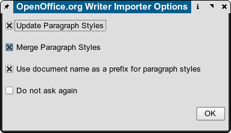

When SUN Microsystems started the OpenOffice.org project, it also introduced a new type of file format. While OpenOffice.org’s predecessor StarOffice used a binary format to store its data, OpenOffice.org’s file format consisted of several XML files that were combined into a ZIP archive. Later, OpenOffice.org’s file formats provided the basis for a new international standard for office documents, such as text documents, spreadsheet or presentations. The standard has been developed by the Organization for the Advancement of Structured Information Standards (OASIS), and it’s called OpenDocument (ODT). OpenDocument has become an ISO standard in 2006 (ISO/IEC 26300:2006).
The clear documentation and specs have helped the Scribus Team to create some useful import features, which will be enhanced in the future.
The importer for Writer (SXW) and ODT documents works per text frame and imports only the text contained in your document. Images and drawings need to be saved separately outside of the Writer document and then each drawing or image can be imported individually. Thus, a compound Writer document with tables or charts will not import the latter. Tables, charts or other embedded objects need to be placed into their own Draw file and exported as described below.
The single most important issue to take into consideration for hassle-free SXW/ODT import is well chosen usage of styles in Writer or any other ODT-compliant word processor. Doing so will greatly reduce the amount of time needed within Scribus to format and style text. Any special paragraph styles in your Writer or ODT file will automatically be imported into your existing Scribus document.
This will import all the text from the source document, so ensure there is enough space in your frame or link extra text frames to the one you are importing into. You can comfortably import 10, 20 or even 50 pages of text in one go. However, the practical limit is probably not more than a chapter’s (15–30 pages) worth of text for performance reasons.
If you have an idea how many text frames you will need for the imported text, you can use an advanced import option. You can find it in the “Insert” menu, and it’s called Frame ....
The “Insert Frame” dialog consists of four tabs. In the first one you have to select “Text Frame” in this context. In the second tab, “Location”, you can determine the pages, on which the new frames will be placed, as well as their position on a page.
|
In the third tab, “Size”, you can set the size of the frames that are being inserted, and in the “Options” tab you determine what’s inside the frame and how it will look:
 |
When importing text from OO.org there are four important options which need to be carefully considered:
|  |
prefs14.xml in the hidden folder ./scribus in your home directory with a text editor, then search for the text string attribute key"=ask-Again" value=0 and replace the 0 with 1.Since Scribus’s table implementation is rather simple, it may be more convenient to create a table in a dedicated spreadsheet application like OpenOffice.org Calc. Here’s a step-by-step instruction for successful table import from Calc:
1. Create your table in either OpenOffice.org Calc:
 |
2. Copy the table items you need in Scribus (i.e., not the whole spreadheet) to the clipboard, create a new OpenOffice.org Draw document, and use Edit > Paste Special > GDI Metafile to insert the table as a vector file into Draw:
 |
3. Use File > Export to export the table as an EPS file. Make sure that “Selection” is checked in the export dialog, because otherwise the whole page will be exported.
4. Now import the EPS file as a vector drawing into Scribus via File > Import > Get Vector File. The result will be a nicely formatted table in Scribus that can be edited using Scribus’s vector tools:
 |
There are two methods: The first is to use the native importer. For many drawings this works very well. In some cases, especially with gradients, it may be preferable to test exporting as EPS or SVG.
It is important to note that Draw 3D objects do not export well, as they are limited to screen resolution. They also do not print well in most cases and will appear pixellated at print resolutions. Moreover, not all shapes and certain kinds of lines, like, for instance, connectors, are supported by the Scribus import filter.
In case you need any of the above, there’s a reliable workaround: Like almost any program that allows for printing, OpenOffice.org provides an option to print to a file instead of sending the data to a printer. Simply go to File > Print in OpenOffice.org and check the “Print to File” option. On Linux/UNIX and Mac OS X this will create a PostScript file.
On Windows and OS/2 you have to install a PostScript printer driver (e.g. Apple Color Laser Writer) first. When you are asked to insert a name for the file you will print to, make sure you select or add "ps" as the file extension.
Next you can open the file or import it as a vector file into Scribus. This time, the content looks almost if not 100 % like the original. Even low-resolution 3D graphics have smooth edges now.
The most reliable way is to create a formula In OpenOffice.org Math and save it as SXM or ODF. Then open OpenOffice.org Draw and create a new file. Use Insert Object > Formula. You will have a tiny embedded square on Draw’s canvas. Next, open Edit Object from the context menu. Draw will now launch Math. In Math, select Tools > Import Formula, browse to your saved formula and save to close the file. The embedded formula is now editable as a vector object. Save this Draw file, then export as EPS and import into Scribus. The formulas and text will import as scalable vector items. This will result in formulas which will print with very high quality and no worries when exported as PDF. Saving the Draw file and attempting to import the Draw file with embedded objects will fail, as Scribus cannot access those objects directly.
See also